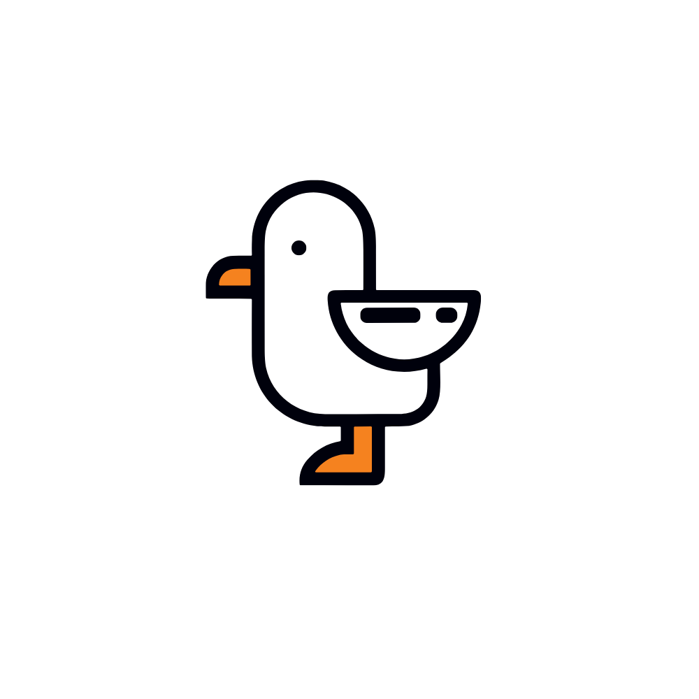
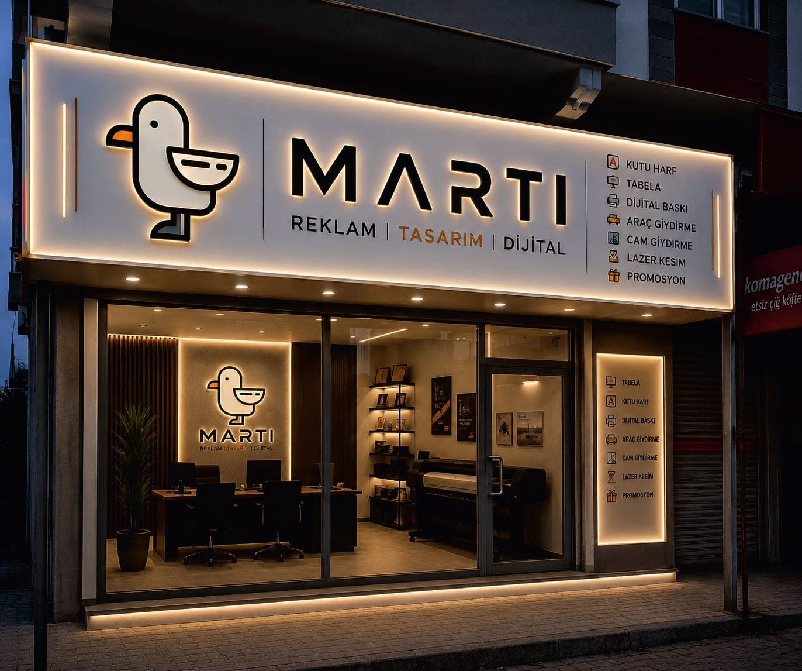

Kutu Harf
Markanız için dikkat çekici, hacimli ve premium görünümlü kutu harf uygulamaları.

Martı; reklam, tasarım ve dijital üretimi tek çatı altında buluşturur. Fikrinizi tasarlarız, üretiriz, uygularız ve markanızın sahadaki görünümünü güçlendiririz.

Bir işletmenin ilk izlenimi tabelasından, vitrininden, aracından ve görsel dilinden başlar. Martı olarak tasarım ile üretimi aynı akışta ele alıyor; markanızın her temas noktasında tutarlı, temiz ve dikkat çekici görünmesini hedefliyoruz.
Martı'nın çalışma alanlarını tek tek değil, bir bütün olarak düşün. Markanızın dış görünüşünden basılı materyallerine kadar ihtiyaç duyduğunuz üretim kalemlerini tek noktada toparlayın.
Markanız için dikkat çekici, hacimli ve premium görünümlü kutu harf uygulamaları.
İşletmenizin kimliğini dışarıdan anlatan tabela tasarım, üretim ve uygulamaları.
Farklı yüzey ve ölçülere uygun, marka iletişimini destekleyen dijital baskı çözümleri.
Aracınızı hareketli bir reklam alanına dönüştüren tasarım, baskı ve uygulama işleri.
Vitrin ve cam yüzeyler için dekoratif, yönlendirici ve reklam odaklı uygulamalar.
Keskin detaylara ve özgün formlara sahip özel üretim ve dekoratif kesim çalışmaları.
Markanızı günlük hayata taşıyan promosyon ürünleri ve hediyelik çözümleri.
Yeni işletmeler ve kampanyalar için açılış duyuruları, görsel tasarımlar ve dikkat çekici uygulamalar.
Gönderdiğiniz kurumsal çalışma içindeki Martı mağaza/tabela uygulamasını da bu portföy alanında öne çıkarıyoruz. Gerçek proje fotoğrafları çoğaldıkça bu alan yeni çalışmalarla genişletilebilir.
Logo, tabela, ışıklandırma ve mağaza içi görsel dilin bir arada kullanıldığı bütüncül bir marka uygulaması. Tasarımın üretimle buluştuğu noktada temiz, modern ve güçlü bir görünüm.
İhtiyacınızı, markanızı, ölçünüzü ve hedefinizi anlayarak işe başlıyoruz.
Markanızın karakterine uygun görsel dili ve uygulanabilir çözümü oluşturuyoruz.
Seçilen uygulamayı doğru malzeme ve ölçülerle üretim aşamasına taşıyoruz.
Ürünün son hâlini sahada doğru konumlandırıyor ve marka görünümünü tamamlıyoruz.
Martı Reklam Tasarım ve Dijital; markaların görünür olduğu alanlarda yaratıcı tasarım ile uygulama disiplinini bir araya getiren bir reklam stüdyosudur.
Bizim için iyi iş; yalnızca güzel görünen değil, üretilebilir, uygulanabilir ve markanın karakterini doğru taşıyan iştir.
Yeni tabela, kutu harf, dijital baskı, araç giydirme, cam giydirme, lazer kesim, promosyon veya açılış tasarımı için bize ulaşın.